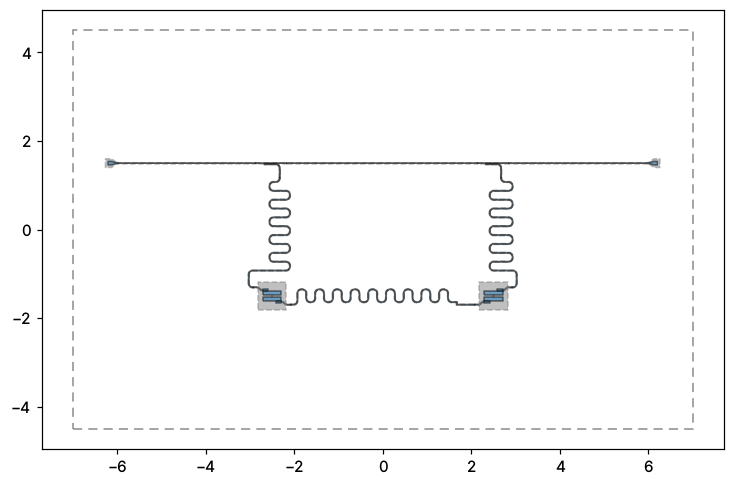

Note
This page was generated from tut/full-design-examples/A.2-Two-coupled-transmons.ipynb.
A.2 Reference design — Two coupled transmons¶
Two transmons, each with its own multiplexed readout resonator, joined by a meandered coplanar-waveguide coupling bus — the building block of a two-qubit gate.
Reference design — attribution. Adapted, with attribution, from the open-source SQDMetal project (Apache-2.0) and its benchmark devices in D. Sommers, P. Pakkiam, Z. Degnan, C.-C. Chiu, D. Gautam, Y.-H. Chen, and A. Fedorov, “Open-Source Highly Parallel Electromagnetic Simulations for Superconducting Circuits,” arXiv:2511.01220 (2025). Re-implemented here with stock Quantum Metal components.


💡 Running in Colab or Binder? Skip the desktop GUI install — the cell below grabs the lite (no-Qt) wheel, and
qm.gui(design)auto-picks an inline matplotlib viewer with the same API as the desktopMetalGUI.
[1]:
# In Colab / Binder, uncomment to install Quantum Metal (lite, no Qt).
# Locally you should already have it via `pip install quantum-metal` or
# `pip install 'quantum-metal[gui]'` for the desktop GUI.
# !pip install -q quantum-metal
[2]:
import qiskit_metal as qm
from qiskit_metal import Dict, designs
from qiskit_metal.qlibrary.qubits.transmon_pocket import TransmonPocket
from qiskit_metal.qlibrary.tlines.meandered import RouteMeander
from qiskit_metal.qlibrary.tlines.pathfinder import RoutePathfinder
from qiskit_metal.qlibrary.couplers.coupled_line_tee import CoupledLineTee
from qiskit_metal.qlibrary.terminations.launchpad_wb import LaunchpadWirebond
design = designs.DesignPlanar()
design.overwrite_enabled = True
# The default die is 9mm x 6mm; the launchpads below sit outside it.
design.chips.main.size.size_x = "14mm"
design.chips.main.size.size_y = "9mm"
[3]:
def feed(a, ap, b, bp, name):
"""Auto-route a coplanar-waveguide feedline segment between two pins."""
RoutePathfinder(
design,
name,
options=dict(
fillet="90um",
pin_inputs=Dict(
start_pin=Dict(component=a, pin=ap), end_pin=Dict(component=b, pin=bp)
),
),
)
def readout(clt, q, name, length):
"""Meandered lambda/4 readout resonator: coupled-line tee -> qubit readout pad."""
RouteMeander(
design,
name,
options=dict(
fillet="90um",
total_length=length,
lead=Dict(start_straight="100um", end_straight="100um"),
pin_inputs=Dict(
start_pin=Dict(component=clt, pin="second_end"),
end_pin=Dict(component=q, pin="readout"),
),
),
)
1. Two transmons¶
Each transmon gets a readout pad (top, outward) and a coupler pad (bottom, facing its neighbour).
[4]:
TransmonPocket(
design,
"Q1",
options=dict(
pos_x="-2.5mm",
pos_y="-1.5mm",
pad_width="425um",
pocket_height="650um",
connection_pads=dict(
readout=dict(loc_W=-1, loc_H=1), coupler=dict(loc_W=1, loc_H=-1)
),
),
)
TransmonPocket(
design,
"Q2",
options=dict(
pos_x="2.5mm",
pos_y="-1.5mm",
pad_width="425um",
pocket_height="650um",
connection_pads=dict(
readout=dict(loc_W=1, loc_H=1), coupler=dict(loc_W=-1, loc_H=-1)
),
),
)
[4]:
![Q2]()
Options
| option | value | parsed | description |
|---|---|---|---|
| pos_x | '2.5mm' | 2.5 | The x/y position of the center of the QComponent. |
| pos_y | '-1.5mm' | -1.5 | The x/y position of the center of the QComponent. |
| orientation | '0.0' | 0.0 | The primary direction in degrees of the QComponent. Expressed counter-clockwise orientation. |
| chip | 'main' | 'main' | Chip holding the QComponent. |
| layer | '1' | 1.0 | Manufacturing layer used for the QComponent. |
| connection_pads | The dictionary which contains all active connection lines for the qubit. | ||
| readout | |||
| pad_gap | '15um' | 0.015 | Space between the connector pad and the charge island it is nearest to |
| pad_width | '125um' | 0.125 | Width (x-axis) of the connector pad |
| pad_height | '30um' | 0.03 | Height (y-axis) of the connector pad |
| pad_cpw_shift | '5um' | 0.005 | Shift the connector pad cpw line by this much away from qubit |
| pad_cpw_extent | '25um' | 0.025 | Shift the connector pad cpw line by this much away from qubit |
| cpw_width | 'cpw_width' | 0.01 | Center trace width of the CPW line |
| cpw_gap | 'cpw_gap' | 0.006 | Dielectric gap width of the CPW line |
| cpw_extend | '100um' | 0.1 | Depth the connector line extense into ground (past the pocket edge) |
| pocket_extent | '5um' | 0.005 | How deep into the pocket should we penetrate with the cpw connector (into the fround plane) |
| pocket_rise | '65um' | 0.065 | How far up or downrelative to the center of the transmon should we elevate the cpw connection point on the ground plane |
| loc_W | 1 | 1 | Width location only +-1 |
| loc_H | 1 | 1 | Height location only +-1 |
| coupler | |||
| pad_gap | '15um' | 0.015 | Space between the connector pad and the charge island it is nearest to |
| pad_width | '125um' | 0.125 | Width (x-axis) of the connector pad |
| pad_height | '30um' | 0.03 | Height (y-axis) of the connector pad |
| pad_cpw_shift | '5um' | 0.005 | Shift the connector pad cpw line by this much away from qubit |
| pad_cpw_extent | '25um' | 0.025 | Shift the connector pad cpw line by this much away from qubit |
| cpw_width | 'cpw_width' | 0.01 | Center trace width of the CPW line |
| cpw_gap | 'cpw_gap' | 0.006 | Dielectric gap width of the CPW line |
| cpw_extend | '100um' | 0.1 | Depth the connector line extense into ground (past the pocket edge) |
| pocket_extent | '5um' | 0.005 | How deep into the pocket should we penetrate with the cpw connector (into the fround plane) |
| pocket_rise | '65um' | 0.065 | How far up or downrelative to the center of the transmon should we elevate the cpw connection point on the ground plane |
| loc_W | -1 | -1 | Width location only +-1 |
| loc_H | -1 | -1 | Height location only +-1 |
| pad_gap | '30um' | 0.03 | The distance between the two charge islands, which is also the resulting 'length' of the pseudo junction |
| inductor_width | '20um' | 0.02 | Width of the pseudo junction between the two charge islands (if in doubt, make the same as pad_gap). Really just for simulating in HFSS / other EM software |
| pad_width | '425um' | 0.425 | The width (x-axis) of the charge island pads |
| pad_height | '90um' | 0.09 | The size (y-axis) of the charge island pads |
| pocket_width | '650um' | 0.65 | Size of the pocket (cut out in ground) along x-axis |
| pocket_height | '650um' | 0.65 | Size of the pocket (cut out in ground) along y-axis |
| hfss_wire_bonds | False | False | Add wire bonds over this path when rendered to hfss. |
| q3d_wire_bonds | False | False | Add wire bonds over this path when rendered to q3d. |
| aedt_q3d_wire_bonds | False | False | Add wire bonds over this path when rendered to aedt_q3d. |
| aedt_hfss_wire_bonds | False | False | Add wire bonds over this path when rendered to aedt_hfss. |
| hfss_inductance | '10nH' | '10nH' | Junction inductance used when the junction is rendered to hfss. |
| hfss_capacitance | 0 | 0 | Junction capacitance used by hfss (0: none). |
| hfss_resistance | 0 | 0 | Junction resistance used by hfss (0: none). |
| hfss_mesh_kw_jj | 7e-06 | 7e-06 | Largest mesh element on the junction in hfss, in meters. |
| q3d_inductance | '10nH' | '10nH' | Junction inductance used when the junction is rendered to q3d. |
| q3d_capacitance | 0 | 0 | Junction capacitance used by q3d (0: none). |
| q3d_resistance | 0 | 0 | Junction resistance used by q3d (0: none). |
| q3d_mesh_kw_jj | 7e-06 | 7e-06 | Largest mesh element on the junction in q3d, in meters. |
| gds_cell_name | 'my_other_junction' | 'my_other_junction' | Cell of the junction GDS file (the GDS renderer's path_filename) that replaces this component's junction on export. |
| aedt_q3d_inductance | 1e-08 | 1e-08 | Junction inductance used when the junction is rendered to aedt_q3d. |
| aedt_q3d_capacitance | 0 | 0 | Junction capacitance used by aedt_q3d (0: none). |
| aedt_hfss_inductance | 1e-08 | 1e-08 | Junction inductance used when the junction is rendered to aedt_hfss. |
| aedt_hfss_capacitance | 0 | 0 | Junction capacitance used by aedt_hfss (0: none). |
Pins
| pin | middle (mm) | normal | width (mm) | connected to |
|---|---|---|---|---|
| readout | (2.9250, -1.3050) | 0.0° | 0.01 | — |
| coupler | (2.0750, -1.6950) | 180.0° | 0.01 | — |
3. Qubit-qubit coupling bus¶
A meandered CPW between the two coupler pads sets the exchange coupling.
[6]:
RouteMeander(
design,
"coupler_bus",
options=dict(
fillet="90um",
total_length="8mm",
lead=Dict(start_straight="150um", end_straight="150um"),
meander=Dict(asymmetry="200um"),
pin_inputs=Dict(
start_pin=Dict(component="Q1", pin="coupler"),
end_pin=Dict(component="Q2", pin="coupler"),
),
),
)
06:53PM 22s WARNING [check_lengths]: For path table, component=coupler_bus, key=trace has short segments that could cause issues with fillet. Values in (37-38) are index(es) in shapely geometry.
06:53PM 22s WARNING [check_lengths]: For path table, component=coupler_bus, key=cut has short segments that could cause issues with fillet. Values in (37-38) are index(es) in shapely geometry.
[6]:
![coupler_bus]()
Options
| option | value | parsed | description |
|---|---|---|---|
| chip | 'main' | 'main' | Chip holding the QComponent. |
| layer | '1' | 1.0 | Manufacturing layer used for the QComponent. |
| pin_inputs | |||
| start_pin | Component and pin string pair. Define which pin to start from | ||
| component | 'Q1' | 'Q1' | Name of component to start from, which has a pin |
| pin | 'coupler' | 'coupler' | Name of pin used for pin_start |
| end_pin | Component and pin string pair. Define which pin to start from | ||
| component | 'Q2' | 'Q2' | Name of component to end on, which has a pin |
| pin | 'coupler' | 'coupler' | Name of pin used for pin_end |
| fillet | '90um' | 0.09 | |
| lead | |||
| start_straight | '150um' | 0.15 | Lead-in, defined as the straight segment extension from start_pin. Defaults to 0.1um. |
| end_straight | '150um' | 0.15 | Lead-out, defined as the straight segment extension from end_pin. Defaults to 0.1um. |
| start_jogged_extension | '' | '' | Lead-in, jogged extension of lead-in. Described as list of tuples |
| end_jogged_extension | '' | '' | Lead-out, jogged extension of lead-out. Described as list of tuples |
| total_length | '8mm' | 8 | |
| trace_width | 'cpw_width' | 0.01 | Defines the width of the line. Defaults to 'cpw_width'. |
| meander | |||
| spacing | '200um' | 0.2 | Minimum spacing between adjacent meander curves. Defaults to 200um. |
| asymmetry | '200um' | 0.2 | offset between the center-line of the meander and the center-line that stretches from the tip of lead-in to the x (or y) coordinate of the tip of the lead-out. Defaults to '0um'. |
| snap | 'true' | 'true' | |
| prevent_short_edges | 'true' | 'true' | |
| hfss_wire_bonds | False | False | Add wire bonds over this path when rendered to hfss. |
| q3d_wire_bonds | False | False | Add wire bonds over this path when rendered to q3d. |
| aedt_q3d_wire_bonds | False | False | Add wire bonds over this path when rendered to aedt_q3d. |
| aedt_hfss_wire_bonds | False | False | Add wire bonds over this path when rendered to aedt_hfss. |
| trace_gap | 'cpw_gap' | 0.006 | |
| _actual_length | '7.999999999999844 mm' | 7.999999999999844 |
Pins
| pin | middle (mm) | normal | width (mm) | connected to |
|---|---|---|---|---|
| start | (-2.0750, -1.6950) | 180.0° | 0.01 | Q1.coupler |
| end | (2.0750, -1.6950) | 0.0° | 0.01 | Q2.coupler |
4. Visualize¶
Next steps¶
Inspect the design tree:
design.components.keys()anddesign.qgeometry.tables.Export GDS for fabrication:
design.renderers.gds.export_to_gds('chip.gds')(Quantum Metal uses the moderngdstkbackend).Simulate: render to Ansys HFSS/Q3D (the validation gold standard) or to the open-source FEM path (Gmsh + Elmer today; AWS Palace on the roadmap) to extract eigenmodes, Q, and the capacitance matrix.
Tweak: every dimension above is a parameter — change
total_lengthto retune resonator frequencies, orpos_x/pos_yto relayout.
[7]:
design.components.keys()
[7]:
['Q1',
'Q2',
'clt1',
'clt2',
'LP1',
'LP2',
'feed_L',
'feed_M',
'feed_R',
'read1',
'read2',
'coupler_bus']
[8]:
fig = qm.view(design)
qm.show_inline(fig)

For more information, review the Introduction to Quantum Computing and Quantum Hardware lectures below
|
Lecture Video | Lecture Notes | Lab |
|
Lecture Video | Lecture Notes | Lab |
|
Lecture Video | Lecture Notes | Lab |
|
Lecture Video | Lecture Notes | Lab |
|
Lecture Video | Lecture Notes | Lab |
|
Lecture Video | Lecture Notes | Lab |